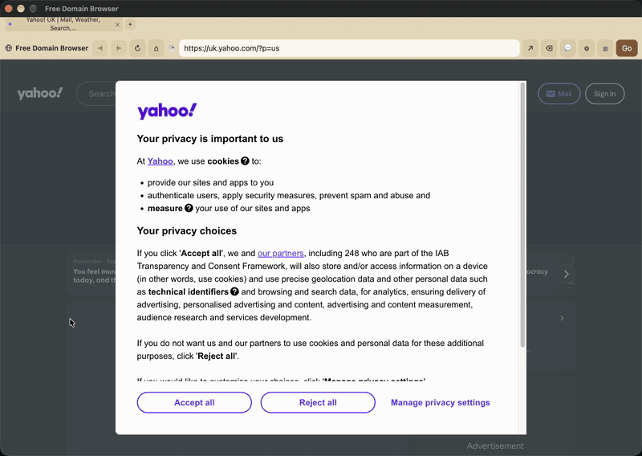

Free Domain Name is a public registry of free domain names, reviewed by people
and openable in the open-source
Free Domain Browser.
It lists names the normal DNS does not own — from hello.fdn to a
second route to a real domain. Real people visit, vote with 👍 or 👎, and leave a
useful note for the next person.
◎
No AI-generated domains. No AI-written reviews. One GitHub account, one vote.

The CEF build opening ozkanpakdil.fdn, resolved through the registry.
Two builds, one project
The browser, in two engines.
Both check the community registry before public DNS, and both join the same chat.
Stable
Free Domain Browser
Tauri · the system web view
Uses the web view that is already on the machine: WebView2 on Windows, WKWebView on macOS,
WebKitGTK on Linux. Small download, native look, and a real installer for every platform.
Installers for macOS, Windows and Linux: DMG, MSI, NSIS, AppImage, deb
Seven skins, a CSS editor and a compact density
Registry-first resolution, the claim flow and the community chat
Ships Chromium with the app, so every page is rendered by the same engine on every machine.
Written in Rust on the Chromium Embedded Framework, with the chrome bar as plain HTML.
A real Chromium engine, with the renderer in its own process
Portable packages for macOS, Linux and Windows
Signed and notarized on macOS, so it opens without a prompt
The same registry, the same claim flow and the same iroh chat
The script downloads the latest portable CEF build, checks its SHA-256 against the
published checksums.txt, and unpacks it into your home directory:
~/Applications on macOS,
~/.local/share/free-domain-browser on Linux,
%LOCALAPPDATA%\Programs\FreeDomainBrowser on Windows.
It needs no root and installs nothing system wide: no daemon, no service, no
package manager, and nothing is left running. Each script is one readable file, so
you can read it before you run it.
Rolling 7 days
Top this week
Ranked by human votes. Loading the public index…
Votes are opinions, not security audits. A 100% score from two
people does not make a site safe.
Every name here is a real destination with a public thread. Open one and leave the
first honest note — it takes about two minutes.
How a review works
Start here
Reviewing a name takes two minutes.
Every name on this board comes from a public discussion in the registry. Open it,
react to the reviews that are already there, and — if you know the domain — leave a
note of your own. That is the whole job.
Reviews are opinions, not security audits, and the project does not run the names it
maps. Read them as what one person saw, not as a verdict.
Fork the registry, add one JSON file for your name, and open a pull request against free-domain-name/registry.
02
Follow the shard rule
The path comes from the registry's scripts/shard.mjs: drop the dots, take the first four characters as four directory names, then put the file inside. ozkanpakdil.fdn becomes o/z/k/a/ozkanpakdil.fdn.json.
03
Point at a domain you own
target_url is an http(s) origin with no path, and ttl is a number between 60 and 86400. The name has to be yours to point at.
04
Let people review it
The pull request opens a discussion titled with the bare domain, for example example.fdn. The community votes there, and a maintainer merges the file.
The small print that matters
Small rules, real people.
The board is deliberately simple. It counts only public GitHub reactions
created in the last seven days, then sorts by votes. No paid placement, no
engagement algorithm, no synthetic content.
01
One person, one vote
GitHub accounts are the identity layer. Votes are public reactions on the domain’s discussion.
02
Seven-day window
A vote counts while it is present and was created in the last seven days. Old votes roll off the board.
03
Humans write the record
Domains are submitted by people, not generated in bulk. Reviews are human-written and moderated.
This is not ICANN, a registrar, or a security authority. Names and destinations are
third-party submissions. Read the
full disclaimer and community rules.
The next vote is yours
Make the free web a little more legible.
Open a random name, vote on what you find, and tell the next visitor what you learned.